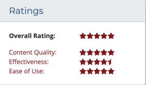
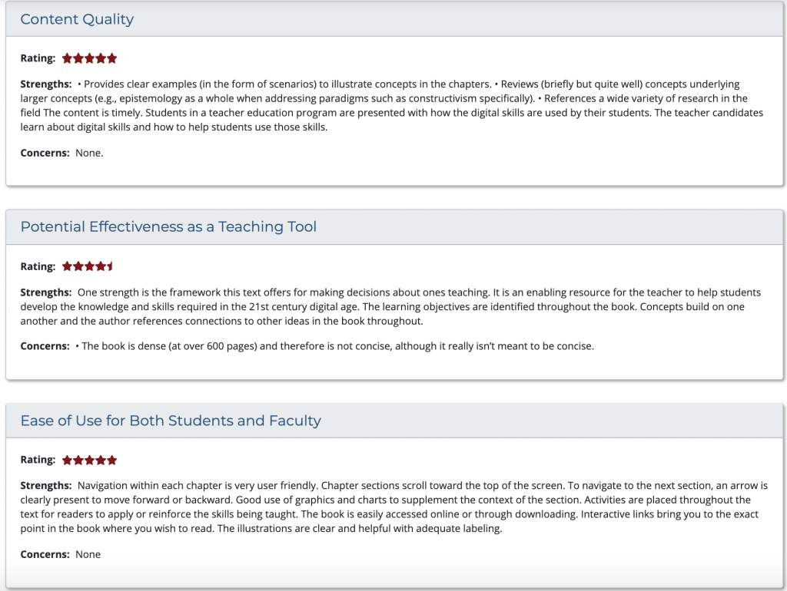

O MERLOT é uma coleção curada de serviços on-line gratuitos e abertos de ensino, aprendizagem e desenvolvimento docente, mantida e utilizada por uma comunidade internacional de educação. Ao contrário de outros repositórios de materiais didáticos, os recursos do MERLOT são avaliados sob diversas metodologias para garantir a sua utilidade para a comunidade. O processo de avaliação por pares é coordenado por um Editor e conta com a participação de membros do conselho editorial e revisores externos.
Este livro foi selecionado e avaliado de forma independente pelo MERLOT. A resenha original pode ser acessada aqui: https://www.merlot.org/merlot/viewCompositeReview.htm?id=1356177
Apresenta-se a seguir uma versão resumida da resenha:

Avaliado em: 5 de janeiro de 2018 por Formação de Professores (Teacher Education)
Tipo de Recurso: Livro Didático Aberto (Open Access Textbook)
Usos Recomendados: Leitura de referência e discussões em sala, material para desenvolvimento profissional e formação contínua
Requisitos Técnicos: Leitura on-line em https://opentextbc.ca/teachinginadigitalage/ ou download gratuito em formato PDF (necessita de software leitor de PDF).
Público-Alvo: Este livro é adequado para formadores de professores, designers instrucionais, designers curriculares, docentes no exercício da profissão, administradores escolares, profissionais de apoio ao ensino e estudantes da área de educação.
Principais Objetivos de Aprendizagem: A obra analisa os princípios fundamentais que orientam o ensino eficaz numa era em que todos, e em particular os estudantes a quem ensinamos, utilizam a tecnologia. É proposto um quadro de referência e um conjunto de diretrizes para a tomada de decisões pedagógicas, reconhecendo que cada disciplina apresenta especificidades próprias e que cada docente traz um contributo singular e único para a sua docência.
Conhecimentos ou Competências Prévias: Recomenda-se familiaridade básica com teoria e prática pedagógica geral.
